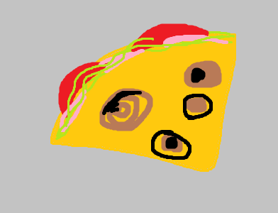

Deli Fold

Description
This would be a wrap but is twice folded instead of wrapped.
Fun to carry; fun to eat.
Ingredients
- 1/8 lb. deli meat (cajun turkey bread, hot capicola ham, etc.)
- 1 cup uncooked baby spinach or lettuce
- 3 slices of tomato
- 1 slice of provolone cheese
- (Optional) 1 tub of condiment from some fast food place (e.g. Polynesian sauce from Chick-Fil-A, Sweat and Sour from Wendy's, etc.
Steps
- Crease the tortilla by folding it twice perpendicularly across the diameter.
- Put the deli meat evenly in one quadrant.
- Put the spinach evenly in an adjacent quadrant.
- Pour the sauce over both filled quadrants if including.
- Fold the two uncovered quadrants over.
- Slap the cheese on one of the two exposed quadrants with vigor.
- Fold the uncovered quadrant over the cheesed quadrant.
- Hold your fold with one hand and sign the letter 'Y' in ASL in the other, shaking it slightly.
- Enjoy.